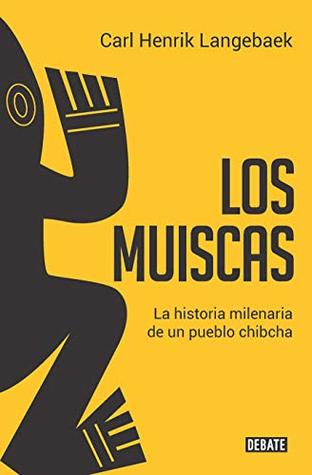

Los muiscas
Reseña por Jorge I. Zuluaga

Ver reseña en GoodReads (necesita cuenta)
Fue por eso que lo leí. Quería (y todavía quiero) saber más sobre las culturas y las lenguas que habitaron por miles de años el país que resulto del desigual choque de culturas que se produjo en los últimos 5 siglos y que llevo a muchos de esos pueblos y a sus lenguas a la extinción total (o parcial en muy pocos casos).
Creo que el profesor Langebaek lo logra en este libro y esperaría que otros expertos en culturas diferentes a la Chibcha lo imiten para saber más sobre los habitantes originales de la amazonía colombiana, el sur de Colombia o las cordilleras central y occidental (donde vivo por ejemplo).
El libro hace primero un recorrido por la historia de los Muiscas, uno de los pueblos Chibchas con origen en centroamérica, que terminaron estableciéndose en la cordillera oriental en el territorio de lo que hoy es Colombia, especialmente en las regiones de Santander, Boyaca y Cundinamarca, incluyendo, naturalmente la extensa sabana en la que están hoy Bogotá, la capital de Colombia y las ciudades vecinas. A continuación hace una descripción pormenorizada de las costumbres, organización social, vida cotidiana, algunos detalles de la religión y la relación con otros pueblos, incluyendo los invasores colonos españoles.
Me encanta el enfoque del Profesor Langebaek de contar la historia tal y como la narra de un lado algunos cronistas cercanos al mismo pueblo Muisca y del otro la evidencia arqueológica (evidencia científica), en lugar de detenerse a repetir, literalmente, lo que los cronistas españoles repitieron por siglos sobre los pueblos que encontraron y que termino convertido en mitología sobre esos pueblos originales.
El mito más importante que creo que tumba este libro es el de la organización altamente jerarquizada (como las monarquías europeas) de los más poderosos pueblos indígenas originales de Colombia. No hubo tal. La idea de que los Muiscas estaban dominados por unos poderosos caciques, Bogotá, Tunja, Facatativa, a los que pueblos más débiles les servían y pagaban tributos (como se los pagaríamos los americanos a los españoles por siglos) es falsa y me agradó descubrirlo en este libro. Naturalmente no se trataba de sociedades completamente igualitarias, pero tampoco eran monarquías verticales como nos lo han vendido siempre.
Si bien aprendí cosas muy interesantes que no sabía sobre la investigación arqueológica, por ejemplo el valor que tiene la basura y los muertos (esto último más obvio que lo primero) o la manera como se estiman las densidades poblacionales a partir de las densidades de restos, me parece que hay apartes del libro excesivamente técnicos que podrían repeler a los lectores menos pacientes. Entiendo que al ser el autor un experto en el tema no pueda dejar de presentar estos detalles, pero también estoy seguro que precisamente por serlo podría haberlos presentado de una manera más digerible.
Encontré en el libro lo que busco en los buenos textos divulgativos: 1) una aproximación simple a temas de investigación científica normalmente inasequibles para los que no somos expertos; 2) reflexiones originales sobre temas ampliamente tratados por otros textos (¿estaban los Muiscas realmente dominados por grandes caciques de los que eran súbditos?); 3) claves sobre la manera como se investigan estos temas (no sabía que los isótopos de Carbono podrían decir tanto sobre qué tipos de plantas comían los pueblos); 3) datos curiosos que me permitirán recordar algunas de las cosas que aprendí mientras leía el libro (por ejemplo que los caciques mandaban a hacer nuevos objetos de oro para entregárselos a los españoles en lugar de usar los que ya tenían porque esos habían sido creados para un propósito muy distinto; que la elite Muisca comía arepas y los demás bollos de maíz; que Bogotá - realmente Funza - tenía 20.000 casas y decenas de miles de habitantes cuando llegaron los españoles; que los cargos sociales más altos llegaban por línea materna y no por la paterna; entre otros).
Como escribí al principio, espero que otros, incluyendo el mismo profesor Langebaek se animen a escribir más sobre nuestros pueblos originales y que lo hagan así, con un espíritu divulgativo, con un deseo de que un público más amplio en Colombia conozca mejor la historia y costumbres de algunos de sus ancestros.